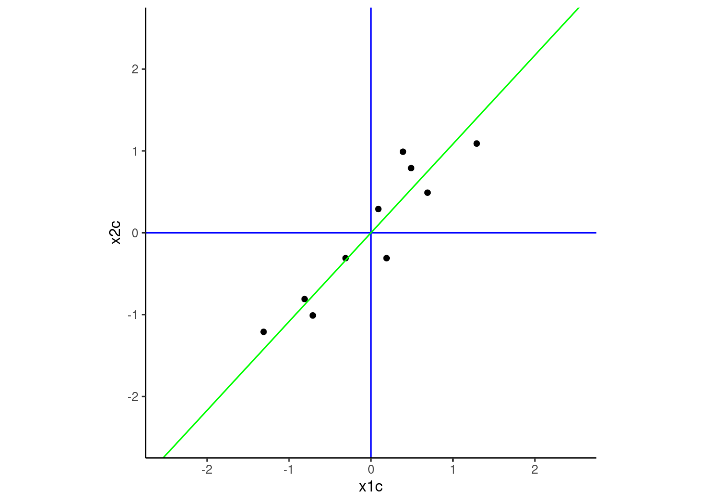
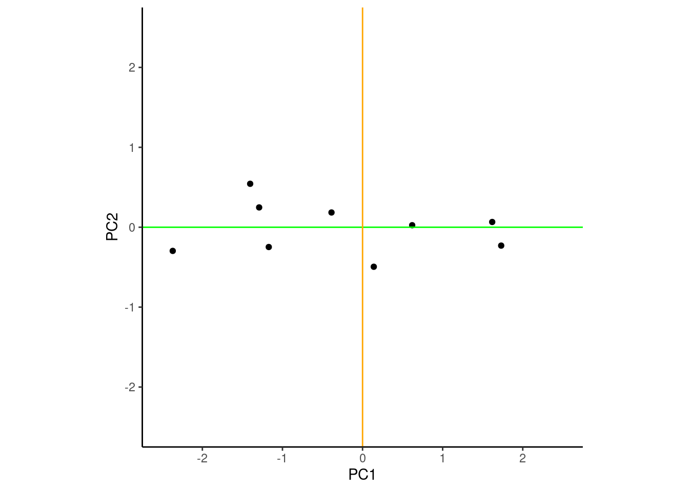

To start, the introductory sections about PCA from Wikipedia provide a nice orientation and summary of the technique.
There is also a useful demonstration of PCA in R on CRAN
In short, PCA linearly transforms our data (our xs to be precise) onto a new coordinate system such that the directions/axes (principal components) capturing the largest variation in the data can be easily identified.
A set of up to p principal components can be derived from p raw variables (e.g. predictors) such that the first principal component is a linear combination of the p raw variables that accounts for the most variance across those variables. The 2nd principal component is a similar linear combination of the raw variables that is orthogonal (uncorrelated) with the first component and accounts for the largest proportion of remaining variance among the raw variables. PCA continues to derive additional components that are each orthogonal to the previous components and account for successively less variance.
These new components represent a new coordinate system within which to represent scores for our observations. This new system is a rotation of the original coordinate system that consists of orthogonal axes (e.g., x, y, z) defined by our raw variables.
We can use PCA to
Understand the structure of our data
Transform our raw (correlated) variables into a set of uncorrelated features
Most importantly, retain a large portion of the the variance from the p original variables with << p principal components. This last benefit may allow us to fit lower variance prediction models (due to less overfitting) without increasing model bias by much.
Applications in machine learning
When we discuss PCA in the machine learning world, we consider it an example of an unsupervised machine learning approach.
It is applied to the raw predictors (the xs, ignoring y).
We use it to reduce the dimensionality of our features to minimize overfitting that can contribute to model variance.
A Two Dimensional Example
This example is based loosely on a tutorial and demonstration data developed by Lindsay Smith
For a second example that extends to 3D space, see this website
And to be clear, PCA can be applied to any number of dimensions and is most useful for high dimensional data (e.g., p >> 2).
Let’s start with a toy dataset for two variables (e.g., predictors), x1 and x2 and a sample size of 10. We will work in two dimensions to make the example easier to visualize but the generalization to p dimensions (where p = number of variables) is not difficult.
Here is a scatterplot of the dataset. I’ve also added a green dot (that is not part of the dataset) at the mean of x1 and x2. This will be the point of rotation for the dataset as we attempt to find a new coordinate system (not defined by x1 and x2), where the dataset’s variance is maximized across the new axes (the principal components) and the observations are uncorrelated in this new coordinate system.
Code
theme_set(theme_classic())d |>ggplot(aes(x = x1, y = x2)) +geom_point() +geom_point(data =tibble(x1=mean(d$x1), x2 =mean(d$x2)), size =2, color ="green") +xlim(-1,4) +ylim(-1,4) +coord_fixed()
The first step in the process is to center both x1 and x2 such that their means are zero. This moves the green point to the origin. This will make it easier to rotate the data around that point (the definitions of the new principal components will be defined as a linear combination of the original variables but there is not offset/intercept in those transformation formulas).
I’ve left the green point at the mean of x1c and x2c for this plot to reinforce the impact of centering. I will remove it from later figures. I have also drawn the true axes in blue to make the original coordinate system defined by x1 and x2 salient. PCA will rotate this coordinate system to achieve its goals.
Code
d <- d |>mutate(x1c = x1 -mean(x1), x2c = x2 -mean(x2))plot <- d |>ggplot(aes(x = x1c, y = x2c)) +geom_point() +geom_hline(yintercept =0, color ="blue") +geom_vline(xintercept =0, color ="blue") +xlim(-2.5, 2.5) +ylim(-2.5, 2.5) +coord_fixed()plot +geom_point(data =tibble(x1c=mean(d$x1c), x2c =mean(d$x2c)), size =2, color ="green")
NOTE: It is sometimes useful to also scale the original variables (i.e.,, set their standard deviations = 1).
This may be important if the variables have very difference variances.
If you dont scale the variables, the variables with the large variances will have more influence on the rotation than those with smaller variances.
If this is not desirable, scale the variables as well as center them.
However, do know that sometimes variances are larger because of noise and if you scale, you will magnify that noise.
Our goal now is to find the axes of the new coordinate system. The first axis (the first principal component) will be situated such it maximizes the variance in the data across its span. Imagine fittinng all possible lines through the green dot and choosing the line that moves along the widest spread of the data. That line (displayed in green below) will be the first axis of the new coordinate system and projections of the points onto that axis will represent the scores for each observation on our first principal component defined by this axis.

This axis associated with the first principal component is similar to a regression line but not identical.
The red regression line (below) was fit to minimize the sum of the squared errors when predicting the outcome (in this instance when regressing x2c on x1c) from a predictor (in this instance, x1c. These errors are the vertical distances from the red line to the points.
In contrast, the green line maximized variance across that PC1 dimension. As a result, it also minimized deviations around the line. However, thsee deviations are the squared perpendicular distances between the green line and the points. These distances go up and to the left and down and to the right from the green line to the points rather than vertical. They are not the same line!
To find the next principal component, we need to find a new axis that is perpendicular to the first component and in the direction that accounts for the largest proportion of the remaining variance in the dataset.
In our example with only two variables, there is only one direction remaining that is perpendicular/orthogonal with PC1 because we are in two dimensional space given only two original variables.
However, if we were in a higher dimensional space with p > 2 variables, this next component could follow the direction of maximal remaining variance in a direction orthogonal to PC1. Subsequent components up to the pth component given p variables would each be orthogonal to all previous components and in the direction of maximal variance.
We have added this second component (orange) to our 2 dimensional example below.
Coordinate system already present. Adding new coordinate system, which will
replace the existing one.
These two components define a new coordinate system within which to measure/score our observations. The new axes of this system are the PCs. This new coordinate system is a rotation of our original system that was previously defined in axes based on x1 and x2.
Here is a figure displaying the data in this new coordinate system. Notice the group of four points to the left (three vertical and one further to the left). Those same points were previously in the top right quadrant of the coordinate system defined by x1c and x2c.
Scores on each of the two components are obtained by projecting the observations onto the associated axis for that component.
The data show the highest variance over PC1 (the x axis) and the next highest variance over PC2 (the y axis)
When the observations are scored/defined on these PCs, PC1 and PC2 are now new, uncorrelated features we can use to describe the data.
Warning: Removed 1 row containing missing values or values outside the scale range
(`geom_point()`).

PCA using Eigenvectors and Eigenvalues
We can derive the new coordinate system that maximizes the variance on PC1, and then PC2, etc by doing an eigen decomposition of the covariance matrix (or correlation matrix if the x’s are to be scaled). When applied to a p x p covariance matrix, this yields p pairs of eigen vectors and eigen values. Complete explanation of this process is beyond the scope of this tutorial but the interested reader can consult Linear Algebra and its Applications by Gilbert Strang.
In short, the eigen vectors represent the new axes for the principal components and the eigen values indicate the variances of the principal components.
Here is an eigen decomposition of the covariance for our toy data
Code
ei <- d |>select(x1c, x2c) |>cov() |>eigen(symmetric =TRUE)
Eigenvectors. These are unit vectors that point in the direction of the axes of the new coordinate system.
This figure plots these two vectors on our original coordinate system defined by x1c and x2c. Note that these vectors map on the new axes we demonstrated earlier.
Code
plot +annotate("segment", x =0, y =0, xend = ei$vectors[1,1], yend = ei$vectors[2,1], color ="green") +annotate("segment", x =0, y =0, xend = ei$vectors[1,2], yend = ei$vectors[2,2], color ="green")
Eigenvalues. These are the variances associated with the principal components
Code
ei$values
[1] 1.2840277 0.0490834
The eigen decomposition parses the complete variance in the original variables such that PC1 has the most variance, PC2, the second-most, etc. The full set of the PCs will contain all the variance of the original variables.
In our example:
Variance was originally split across x1 and x2.
PC1 now contains most of the variance in the dataset (see eigenvalues above)
Code
var(d$x1)
[1] 0.6165556
Code
var(d$x2)
[1] 0.7165556
All variance accounted for both in original variables and new PCs
Code
ei$values[1] + ei$values[2]
[1] 1.333111
Code
var(d$x1) +var(d$x2)
[1] 1.333111
Stable Compuation of Principal Components
It is more numerically stable to get the principal components using singular vector decomposition (svd() in R) than eigen decomposition.
In base R, prcomp() uses svd and also directly calculates the PCs.
By default, the raw variables are centered by not scaled (We included both arguements below with their defaults so you can see their names)
Code
pca <-prcomp(d |>select(x1, x2), center =TRUE, scale =FALSE)
We can get the vectors associated with the new coordinate system from $rotation Note that direction of the PCs is arbitrary (e.g., PCs are opposite direction from the solution using eigen() with these data)
But when using PCA for dimensionality reduction, we wanted to use the variance of our variables in fewer dimensions (with fewer features) for prediction to reduce overfitting.
Most of variance from the full dataset is now in PC1
We can use PC1 as a feature rather than both x1 and x2.
These were the variances of the orginal variables x1 and x2.
Code
var(d$x1) # variance of x1
[1] 0.6165556
Code
var(d$x2) # variance of x2
[1] 0.7165556
And now most of the variance is in PC1.
We can see this in the eigenvalues
Code
pca$sdev ^2
[1] 1.2840277 0.0490834
and also by just looking at the variances of the PCs directly
Code
var(pca$x[,1]) # variance of PC1
[1] 1.284028
Code
var(pca$x[,2]) # variance of PC2
[1] 0.0490834
Reconstructing the Original Data
If we use all of the principal components, we can reconstruct the original data exactly. However, if our goal is dimensionality reduction, we plan to use fewer than our full set of PCs in our subsequent analyses. Therefore, it can be instructive to see how well we can reproduce the raw data using fewer PCs.
If we used prcomp() to get the PCs, we can reconstruct the original data using the following code
Lets use this code with our toy dataset
We will recreate the raw data using the first principal component only from our example.
This first step reproduces the original Xs, but in their centered/scaled format
Code
n_pc <-1# use only the first PCx_estimated <- pca$x[, 1:n_pc] %*%t(pca$rotation[, 1:n_pc])
If the raw data were scaled and centered, we need to add back the means and scale the data back to the original scale. We need to do this in two steps (in this order)
First, we unscale the data (we did not scale, so we will show the code but not execute it)
Code
orig_x_sd <-c(0.7852105, 0.846496) # original sd of x1 and x2x_estimated <-scale(x_estimated, center =FALSE, scale =1/orig_x_sd)
And then we can add back the means of our raw Xs that we previously subtracted out.
Code
orig_x_means <-c(1.81, 1.91) # original means of x1 and x2x_estimated <-scale(x_estimated, center =-orig_x_means, scale =FALSE)
Lets see how well we were able to recreate the original data using only the first principal component. Below are plots of the original and reconstructed data.
As expected, we do pretty well.
We retain all the variance over the direction of the first PC.
And of course, we lose all the variance over the direction of the second PC because we didnnt use it.
However, in this dataset, most of the variance was in the first PC. This one PC may likely work well for us.
Code
d |>ggplot(aes(x = x1, y = x2)) +geom_point() +xlim(-1,4) +ylim(-1,4) +coord_fixed() +ggtitle("Original Data")
When using PCA for dimensionality reduction, we need to decide how many components to retain.
Lets make another toy dataset with 8 variables that represent a self-report measure that has two subscales. In this instance, if the scale works well, we might expect that we could reduce the 8 items to just 2 components (one for each subscale). This would be a nice reduction from 8 variables to 2 variables. (of course, we don’t need PCA for this because we could just use two subscales to reduce the dimensionality from 8 to 2, but this is just for demonstration purposes).
We will use mvrnorm() to generate a dataset with 8 variables that are correlated.
The first four variables will load primarily on the first component and the last four will load on the second component.
This will create a situation where we can reduce from 8 variables to 2 components.
Code
set.seed(12345)cov_matrix <-matrix(0, nrow =8, ncol =8)cov_matrix[1:4, 1:4] <-0.5cov_matrix[5:8, 5:8] <-0.5cov_matrix[1:4, 5:8] <-0.2# some cross0loadings to make it more realisticcov_matrix[5:8, 1:4] <-0.2diag(cov_matrix) <-1# set variances of all items to 1d2 <- MASS::mvrnorm(n =200, mu =rep(0, 8), Sigma = cov_matrix) |> magrittr::set_colnames(str_c("i", 1:8)) |>as_tibble()
Get principal components for this dataset
Code
pca2 <-prcomp(d2)
There are several common approaches for deciding on the number of components to retain:
Variance Explained
Look at the proportion of variance explained by each component.
You can plot this using a scree plot and look for an “elbow” in the plot where the addition of more components explains less variance.
In this case, we would retain the two components to the left of the elbow.
Code
pca2 |>screeplot(type ="lines")
PCs that account for more variance than individual variables
The eigenvalues ($sdev from prcomp()) quantify the variance explained by each component.
In our example, the individual items had raw variances of 1. Therefore PCs with eigenvalues > 1 account for more variance than any single item.
You can also look at the cumulative proportion of variance explained by the components.
You may choose to retain enough components such that you explain a certain threshold of variance (e.g., 70% or 90%).
Here is the proportion of total variance accounted for by each PC
Code
var_explained <- pca2$sdev^2/sum(pca2$sdev^2)
And here is the cumulative variance as more PCs are retained. Of course, the threshold for variance can feel somewhat arbitrary in most instances so we see less use for this method except in special circumstances.
PCA is a linear transformation of the data. As a result, it only works well if the structure in the data is linear. In our preceding example, there was a clear linear relationship between the two variables x1 and x2. PCA was able to capture this linear relationship well with the first principal component.
If instead, there was a more complicated, non-linear relationship between the variables, PCA may not be able to capture the structure of the data well with just a few components. In this case, we may need to use more components to capture the variance in the data or consider other non-linear dimensionality reduction techniques (e.g., using auto-encoders as in our neural networks unit)
Lets see this problem in a final toy example where this is a quadratic relationship between x1 and x2. In this case, PCA will not be able to capture the variance in the data well with just one component.
Code
set.seed(12345)d3 <-tibble(x1 =rnorm(200, 0, 1),x2 =rnorm(200, 0, .5) + (x1)^2) |># quadratic relationshipmutate(x1 = x1 /sd(x1),x2 = x2 /sd(x2)) # keeping scale of both Xs comparable for simplicityd3 |>ggplot(aes(x = x1, y = x2)) +geom_point() +xlim(-4, 4) +ylim(-1, 7) +coord_fixed()
Do the PCA
Code
pca3 <-prcomp(d3)
Look at eigenvalues for the two PCs. PCA wasn’t successful at capturing the variance in the data with just one component. The first component only accounts for only slightly more variance that the original Xs (raw Xs has variance of 1.0 for both x1 and x2).
Code
pca3$sdev ^2
[1] 1.2251214 0.7748786
And if we were to try to reconstruct the original data using only the first principal component, we would not do a good job. PCA is not a good choice for dimensionality reduction in this case!!
Code
n_pc <-1# use only the first PCx_estimated3 <- pca3$x[, 1:n_pc] %*%t(pca3$rotation[, 1:n_pc])orig_x_means3 <-c(mean(d3$x1), mean(d3$x2)) # original means of x1 and x2x_estimated3 <-scale(x_estimated3, center =-orig_x_means3, scale =FALSE)x_estimated3 |>as_tibble() |>ggplot(aes(x = x1, y = x2)) +geom_point() +xlim(-1,4) +ylim(-1,4) +coord_fixed() +ggtitle("Reconstructed Data")
PCA in Tidymodels
We can use PCA for dimensionality reduction as part of our feature engineering.
Default is center = false and scale = false. You definitely want to center and maybe scale predictors in a previous recipe step before using step_pca()
You can choose number of components to retain by specifying the exact number (num_comp =) or by indicating the minimum variance retained across PCs (threshold =)